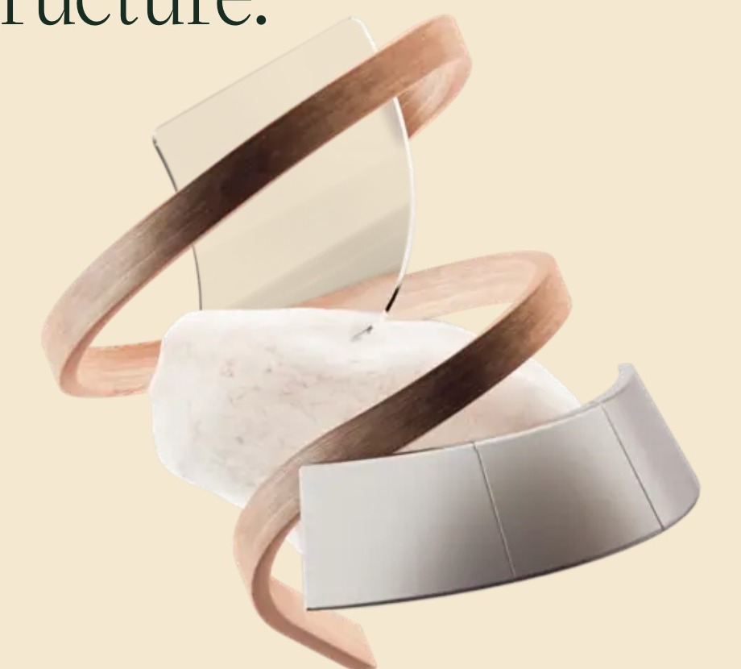

The architects
of the acclaimed Istanbul-
based bureau Tabanlioglu
masterfully frame the world's
leading megapolises
with the silhouettes of their
glistening buildings.
The concept of Springs
is to merge architecture
and nature
within the optical focus
of a vision reaching
into tomorrow.
Ultra-transparent panoramic windows, aluminum panels with restrained luster, natural oak-framed loggias, marble flooring
Springs resembles a waterfall that ceased flowing, as if you could hear roaring cascades and the delicate chiming of scattered drops in a matter of seconds. How did we create this effect?

High-clarity glass makes our building appear levitating, while stone and wood allow you to feel the essence of time — time that you'll wish to halt again and again to admire the elegance that adorns your life.
Imagine bathing in the crystal-clear pool, your whole body feeling light and energized. The splashing water carrying all superficial thoughts away. You emerge, feeling pleasant coolness on your skin.
Our fitness center, offering state-of-the-art equipment, supports your health and well-being. Panoramic windows and comfortable environment guarantee your full satisfaction.
Our viewing terraces will surround you with beauty of botanical sculptures.
Our Wellness center will greet you with beauty chiseled in marble and dissolved in water.